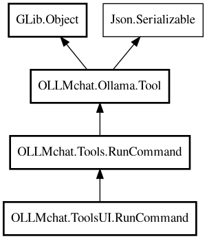

RunCommand
Object Hierarchy:

Description:
public class RunCommand : RunCommand
GTK-specific version of RunCommand that creates SourceView widgets for displaying terminal output.
This class extends Tools.RunCommand and adds GTK widget creation. It should only be used when building with GTK dependencies.
Content:
Creation methods:
Methods:
- protected override void append_to_widget (string text)
Appends text to the SourceView buffer. Handles newlines - if text
starts with newline, it's added as-is. Otherwise, adds newline before text if buffer has content.
- protected override Object? create_terminal_widget ()
Creates a SourceView widget for displaying terminal output.
- protected override void send_or_append_message (string text)
Appends message to the widget instead of sending via tool_message.
Inherited Members:
All known members inherited from class OLLMchat.Tools.RunCommand
- append_to_widget
- command
- create_terminal_widget
- description
- execute
- execute_tool
- name
- parameter_description
- prepare
- send_or_append_message
All known members inherited from class OLLMchat.Ollama.Tool
- active
- client
- description
- execute
- execute_tool
- function
- name
- normalize_file_path
- parameter_description
- parse_parameter_description_string
- permission_operation
- permission_question
- permission_target_path
- prepare
- readParams
- tool_type
All known members inherited from class GLib.Object
- @get
- @new
- @ref
- @set
- add_toggle_ref
- add_weak_pointer
- bind_property
- connect
- constructed
- disconnect
- dispose
- dup_data
- dup_qdata
- force_floating
- freeze_notify
- get_class
- get_data
- get_property
- get_qdata
- get_type
- getv
- interface_find_property
- interface_install_property
- interface_list_properties
- is_floating
- new_valist
- new_with_properties
- newv
- notify
- notify_property
- ref_count
- ref_sink
- remove_toggle_ref
- remove_weak_pointer
- replace_data
- replace_qdata
- set_data
- set_data_full
- set_property
- set_qdata
- set_qdata_full
- set_valist
- setv
- steal_data
- steal_qdata
- thaw_notify
- unref
- watch_closure
- weak_ref
- weak_unref
All known members inherited from interface Json.Serializable
- default_deserialize_property
- default_serialize_property
- deserialize_property
- find_property
- get_property
- list_properties
- serialize_property
- set_property